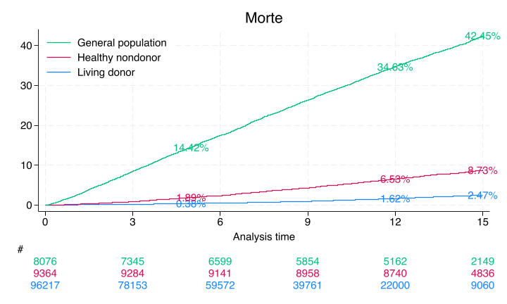

#
Stata#
Stata I (Basic)#
Commands, syntax, and file management restricted to Stata dropdown menu, command window, and
.dofiles on local computer
Stata II (Intermediate)#
File management including
.do,.ado, and datafiles are managed remotely on GitHub to enhance collaboration, sharing, and openness
Stata III (Advanced)#
Batch mode is used on a
Visual Studio Codeterminal with.shscripts, with .do files and other outputs embedded in.ipynbenv. Alternatively,.ipynbcodeblocks are used with a Stata kernel, in the same way as is done while running R with an R kernel. This completely mimics the Python environment and Stata and R applications needn’t ever be opened. RMarkdown has absolutely no advanced over a Jupyter book.
Victory! But After 100 Iterations!!
Just scored a victory that carries profound implications for “Stata III (Advanced)”#
It looks like the Stata kernel (stata) is listed as an available kernel, which is a good sign. Since you’re still not seeing it in the kernel selector in VS Code, it might be worth checking the VS Code settings to ensure it’s looking in the correct directory for kernels.
In VS Code, you can check the Jupyter kernel settings by going to the command palette (Ctrl+Shift+P) and searching for “Preferences: Open Settings (UI)”. Then, navigate to the “Python > Jupyter” section and look for the “Jupyter: Kernel Spec Path” setting. Make sure it’s pointing to the correct directory where the Stata kernel is installed (/Users/d/Library/Jupyter/kernels/ in your case).
If the path is correct and you’re still not seeing the Stata kernel, you might try restarting VS Code again or even restarting your computer to see if that resolves the issue. Sometimes, these changes require a complete restart to take effect.
# Workflow for Stata III
export PATH=$PATH:/applications/stata/statamp.app/contents/macos/
stata-mp -b work/abikesa_batch.do
#
Ah, I see what you’re trying to do. Running Stata in batch mode is a handy way to automate tasks, especially when dealing with large datasets or repetitive tasks.
To run a remote script in batch mode with Stata, you can use the curl command to download the script from GitHub and then pass it to Stata for execution. Here’s how you can do it:
# Download the remote script using curl
curl -O https://github.com/abikesa/do/raw/main/hello.do
# Run Stata in batch mode with the downloaded script
export PATH=$PATH:/applications/stata/statamp.app/contents/macos/
stata-mp -b hello.do
This script will download the hello.do script from the GitHub repository and then execute it in batch mode using Stata. Make sure you have curl installed on your system, or you can use any other tool to download files from the web.
Running scripts remotely can be a powerful tool, but always ensure you trust the source of the script to avoid any security risks.
display "Hello, Stata!"
Hello, Stata!
Nonparametric#
Show code cell source
qui {
capture log close
log using jamascript.log, replace
global repo https://github.com/muzaale/forum/raw/main/
// cls; some commands don't work outside Stata!!
/*noi di "What is your work directory?" _request(workdir)
if "$workdir" == "" {
di as err "Please provide your work directory"
exit
}
else {
cd $workdir
noi di "jamascript is running ..."
}
*/
use ${repo}esrdRisk_t02tT, clear
tab donor rSMGJcEdF_d
g entry = rSMGJcEdF_t0
//linkage for donors after 2011 is untrustworthy
replace rSMGJcEdF_d=0 if rSMGJcEdF_tT > d(31dec2011)
replace rSMGJcEdF_tT = d(31dec2011) if rSMGJcEdF_tT > d(31dec2011)
//linkage before 1994 is untrustworthy
#delimit ;
replace entry = d(01jan1994) if
entry < d(01jan1994) &
rSMGJcEdF_tT > d(01jan1994);
stset rSMGJcEdF_tT,
origin(rSMGJcEdF_t0)
entry(`entry')
fail(rSMGJcEdF_d==2)
scale(365.25);
#delimit cr
sts list, fail by(donor) at(5 12 15) saving(km, replace )
preserve
use km, clear
replace failure=failure*100
sum failure if donor==1 & time==5
local don5y: di %3.2f r(mean)
sum failure if donor==1 & time==12
local don12y: di %3.2f r(mean)
sum failure if donor==1 & time==15
local don15y: di %3.2f r(mean)
//
sum failure if donor==2 & time==5
local hnd5y: di %3.2f r(mean)
sum failure if donor==2 & time==12
local hnd12y: di %3.2f r(mean)
sum failure if donor==2 & time==15
local hnd15y: di %3.2f r(mean)
//
sum failure if donor==3 & time==5
local gpop5y: di %3.2f r(mean)
sum failure if donor==3 & time==12
local gpop12y: di %3.2f r(mean)
sum failure if donor==3 & time==15
local gpop15y: di %3.2f r(mean)
restore
#delimit ;
sts graph,
by(donor)
fail
per(100)
xlab(0(3)15)
ylab(0(10)40,
format(%2.0f))
tmax(15)
risktable(, color(stc1) group (1)
order(3 " " 2 " " 1 " ")
ti("#")
)
risktable(, color(stc2) group(2))
risktable(, color(stc3) group(3))
legend(on
ring(0)
pos(11)
order(3 2 1)
lab(3 "General population")
lab(2 "Healthy nondonor")
lab(1 "Living donor")
)
ti("Morte")
text(`don5y' 5 "`don5y'%", col(stc1))
text(`don12y' 12 "`don12y'%", col(stc1))
text(`don15y' 15 "`don15y'%", col(stc1))
text(`hnd5y' 5 "`hnd5y'%", col(stc2))
text(`hnd12y' 12 "`hnd12y'%", col(stc2))
text(`hnd15y' 15 "`hnd15y'%", col(stc2))
text(`gpop5y' 5 "`gpop5y'%", col(stc3))
text(`gpop12y' 12 "`gpop12y'%", col(stc3))
text(`gpop15y' 15 "`gpop15y'%", col(stc3));
#delimit cr
graph export ~/documents/github/work/jamascript.png, replace
keep _* entry age_t0 female race donor
rename age_t0 age
//dataset
save ~/documents/github/work/jamascript.dta, replace
noi stcox i.donor, basesurv(s0)
noi list s0 _t donor in 1/10
matrix define b=e(b)
keep s0 _t
//s0
sort _t s0
list in 1/10
save ~/documents/github/work/s0.dta, replace
export delimited using ~/documents/github/work/s0.csv, replace
matrix beta = e(b)
svmat beta
keep beta*
drop if missing(beta1)
//betas
list
save b.dta, replace
export delimited using ~/documents/github/work/b.csv, replace
log close
//noi ls
}
Failure _d: rSMGJcEdF_d==2
Analysis time _t: (rSMGJcEdF_tT-origin)/365.25
Origin: time rSMGJcEdF_t0
Iteration 0: Log likelihood = -54332.522
Iteration 1: Log likelihood = -52993.14
Iteration 2: Log likelihood = -51472.516
Iteration 3: Log likelihood = -49543.907
Iteration 4: Log likelihood = -49520.68
Iteration 5: Log likelihood = -49520.548
Iteration 6: Log likelihood = -49520.548
Refining estimates:
Iteration 0: Log likelihood = -49520.548
Cox regression with Breslow method for ties
No. of subjects = 113,657 Number of obs = 113,657
No. of failures = 4,937
Time at risk = 999,633.484
LR chi2(2) = 9623.95
Log likelihood = -49520.548 Prob > chi2 = 0.0000
-------------------------------------------------------------------------------
_t | Haz. ratio Std. err. z P>|z| [95% conf. interval]
--------------+----------------------------------------------------------------
donor |
HealthyNon~r | 4.341779 .2130915 29.92 0.000 3.943586 4.780178
NotSoHealt~r | 26.88098 1.007964 87.78 0.000 24.97625 28.93096
-------------------------------------------------------------------------------
+-------------------------------+
| s0 _t donor |
|-------------------------------|
1. | .98566928 11.277207 Donor |
2. | .99256749 6.8281999 Donor |
3. | .99351642 6.1711157 Donor |
4. | .99402483 5.6919918 Donor |
5. | .98475171 11.816564 Donor |
|-------------------------------|
6. | .99934972 .90622861 Donor |
7. | .98705221 10.472279 Donor |
8. | .9879412 9.8754278 Donor |
9. | .98766713 10.064339 Donor |
10. | .99994059 .08761123 Donor |
+-------------------------------+

Page 961
5-year followup: \(0.4%\)
12-year follow-up: \(1.5%\)
Semiparametric#
\(Y = \beta_0 + \beta_1X_1 + \beta_2X_2 + \cdots + \beta_NX_N + \epsilon_i\)
\(\begin{bmatrix} \beta_0 \\ \beta_1 \\ \beta_2 \\ \vdots \\ \beta_N \end{bmatrix}\)
Where \(X_1\) is Age, \(X_2\) is Female, and \(+ \cdots + \beta_NX_N\) are Race categories
The \(\beta_i\) coeffients can be found here
And the nonparametric base-case survival function can be found here